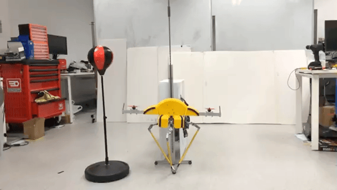
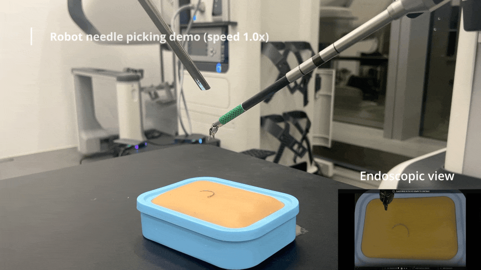

1Bioinspired Agile Locomotion
Key directions
- Aerial reorientation inspired by kangaroo rats
- Morphable tails for self-righting and safe landing
- Hopping robots
Novel mechanisms and control methods that exploit the natural dynamics of the robot.

Key directions

Key directions
Built with surgeons and industry, from the lab to real clinical settings.

Key directions

Key directions